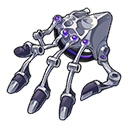

추천 광추
야경 속에서
속도 100 초과분 → 전투 스킬 피해·필살기 치명타 피해
효과 자세히
치명타 확률 +18%. 전투 속도 100 초과 10마다 일반 공격·스킬 피해 +6%, 필살기 치명타 피해 +12%(최대 6스택).
논검
한 적을 연속 공격 → 피해 중첩
효과 자세히
동일한 적을 여러 회 명중 후 매번 가하는 피해가 16% 증가. 해당 효과 최대 중첩수: 5스택. 공격 목표에 변화가 생길 경우 현재 버프 효과가 해제된다
침묵만이
적 2기 이하 → 치명타 확률 보강
효과 자세히
공격력이 32% 증가. 필드 위의 적이 2명 이하일 경우, 치명타 확률이 24% 증가
별바다 순항
치명타 확률과 처치 후 공격력
효과 자세히
치명타 확률이 16% 증가. 장착한 캐릭터는 HP 백분율이 50% 이하인 적에게 가하는 치명타 확률이 추가로 16% 증가. 장착한 캐릭터는 적을 처치한 후 공격력이 40% 증가. 지속 2턴
추천 유물
지식의 바다에 빠진 학자 4 · 창공 전선 그라모스 2
- 머리
 주옵션HP부옵션속도 · 치명타 피해 · 공격력% · 치명타 확률
주옵션HP부옵션속도 · 치명타 피해 · 공격력% · 치명타 확률 - 손

주옵션공격력부옵션속도 · 치명타 피해 · 공격력% · 치명타 확률 - 몸통
 주옵션치명타 피해 / 치명타 확률부옵션속도 · 치명타 피해 (주옵션 제외) · 공격력% · 치명타 확률 (주옵션 제외)
주옵션치명타 피해 / 치명타 확률부옵션속도 · 치명타 피해 (주옵션 제외) · 공격력% · 치명타 확률 (주옵션 제외) - 다리
 주옵션속도 / 공격력%부옵션속도 (주옵션 제외) · 치명타 피해 · 공격력% (주옵션 제외) · 치명타 확률
주옵션속도 / 공격력%부옵션속도 (주옵션 제외) · 치명타 피해 · 공격력% (주옵션 제외) · 치명타 확률 - 구체
 주옵션얼음 피해 증가부옵션속도 · 치명타 피해 · 공격력% · 치명타 확률
주옵션얼음 피해 증가부옵션속도 · 치명타 피해 · 공격력% · 치명타 확률 - 매듭
 주옵션공격력%부옵션속도 · 치명타 피해 · 치명타 확률
주옵션공격력%부옵션속도 · 치명타 피해 · 치명타 확률
이 조합을 추천하는 이유
학자 4세트 → 스킬·필살기 피해 +20%, 필살기 이후 다음 스킬 피해 +25%. 그라모스는 전투 속도 135/160에서 피해 +12%/18%.
이 정도면 잘 키웠다
선택한 세팅 기준 · —는 확인된 수치 없음
| 스탯 | 추천 스탯 | 준종결 | 종결 |
|---|---|---|---|
| 공격력 | 3000 | — | — |
| 치명타 확률 | 80% | — | — |
| 치명타 피해 | 160% | — | — |
세팅 기준·출처
4.7 시트 수치를 보존했습니다. Prydwen은 자버프를 전제로 별도의 치명타 배분을 권장하며 종결을 단일 수치로 규정하지 않습니다. 확인한 자료에 독립적인 준종결 수치가 없습니다.
성혼과 추천 돌파
성혼 1은 빙결이 유지되는 전투, 성혼 2는 필살기 회전에 유효합니다. 먼저 실드와 행동 지원을 갖추세요.
1빙결 대상에게 공격력 60% 추가 피해추천
연경이 적 공격 시 목표가 빙결 상태면 즉시 목표에게 연경 공격력의 60%만큼 얼음 속성 추가 피해를 가한다
2신검합일 중 에너지 회복효율 +10%추천
신검합일 효과 상태일 경우 에너지 회복효율이 추가로 10% 증가
3전투 스킬 +2 · 일반 공격 +1
전투 스킬 +2 · 일반 공격 +1
4HP 80% 이상 → 얼음 저항 관통 +12%
현재 HP 백분율이 80% 이상일 경우, 자신의 얼음 속성 저항 관통이 12% 증가
5필살기 +2 · 특성 +2
필살기 +2 · 특성 +2
6처치 → 신검합일·필살기 버프 +1턴
적 처치 시 신검합일 또는 필살기의 버프 효과를 보유 중일 경우, 해당 버프 효과의 지속 시간이 모두 1턴 연장된다
추천 파티


기본 운영과 행적
기본 운영
실드를 먼저 두르고 스킬로 신검합일을 유지하세요. 연경이 피해를 받으면 신검합일이 풀립니다. 신검합일 상태에서 필살기를 써 치명타 피해 보너스를 챙기세요.
행적 우선순위
전투 스킬 > 필살기 > 특성 > 일반 공격. 특성은 신검합일 중 치명타와 추가 공격의 핵심입니다.
아하 속도 계산기 →기준과 출처 · 2026-11-27
4.7 · 한국어 게임 데이터 및 Prydwen 육성 분석